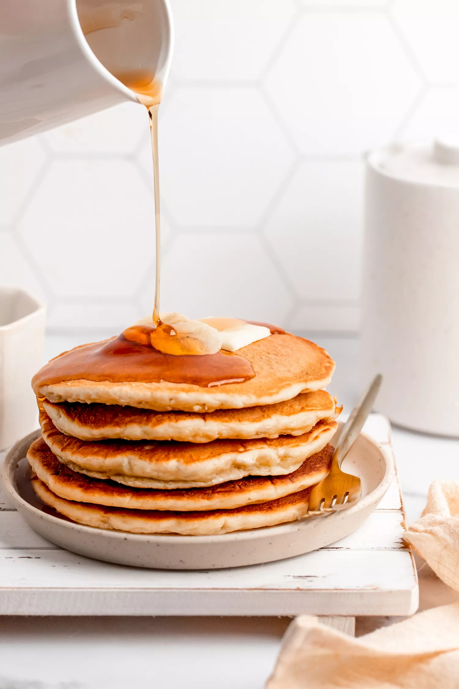

Banana Pancakes

These Banana Pancakes are sure to be a hit with the family!
Ingredients
- 1 cup all-purpose flour
- 1 tbsp white sugar
- 2 tsp baking powder
- 1/4 tsp salt
- 1 egg, beaten
- 1 cup milk
- 2 tbsp vegetable oil
- 2 ripe bananas, mashed
Steps
- Combine dry ingredients in a bowl.
- In a second bowl, mix together egg, milk, vegetable oil and bananas.
- Add the dry mixture to the banana mixture and stir well.
- Heat a frying pan over medium high heat
- Scoop approximately 1/4 cut of the mixture into the pan for each pancake.
- Cook until pancakes are golden brown, around 3-5 minutes per side. Serve hot.